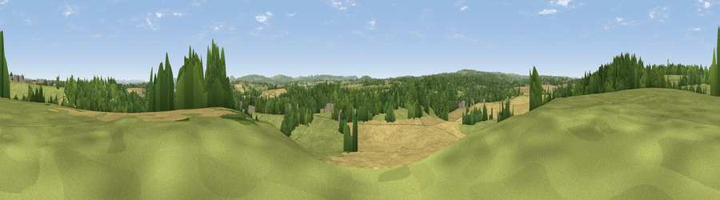

Viewpoint near Great Elm
#23328 in England · top 41% of its area beats it · near Great ElmWhere it is
The exact computed spot (ST 73925 49725). Click the marker for map links.
The view, rendered

A 360° render of this exact spot computed from the terrain model, tree cover and land cover — summer colours, afternoon light, calibrated against photographs of famous viewpoints. Real trees, hedges and buildings will differ in detail.
The panorama
Grey silhouette: terrain skyline in each direction (720 bearings, Earth curvature and refraction included). Dashed green: skyline with trees (+15 m) and buildings (+8 m) as obstacles. Blue strip: how far the ground is visible on each bearing.
Where the view opens
Wedge length = distance to the farthest visible ground on that bearing (vegetation-aware). Rings at 10, 25 and 50 km.
What fills the view
40% cropland · 35% grassland · 24% woodland · 1% built-up
Angular shares of the visible panorama (visual magnitude), not map area. Landscape diversity 0.49 (0–1 Shannon).
Key numbers
More beautiful places nearby
The staircase of upgrades: each row has a higher view potential than everything closer. Driving times are estimates from straight-line distance, calibrated against real road routing — check an actual route before setting out.
| Place | Direction | Drive | Score |
|---|---|---|---|
| Viewpoint near Mells | SSW · 2 km | ~5 min | 49.1 |
| Viewpoint near Downhead | SSW · 7 km | ~14 min | 50.6 |
| Postlebury Hill | S · 7 km | ~14 min | 62.7 |
| Viewpoint near East Cranmore | SW · 7 km | ~15 min | 69.2 |
| Viewpoint near Oakhill | WSW · 10 km | ~20 min | 71.3 |
| Cley Hill | ESE · 11 km | ~21 min | 76.8 |
| Viewpoint near Lamyatt | SSW · 16 km | ~28 min | 77.8 |
| Beacon Batch | WNW · 27 km | ~43 min | 79.4 |
51.24610, -2.37495 · source: screening · position refined by local search. Computed location — check access rights before visiting.